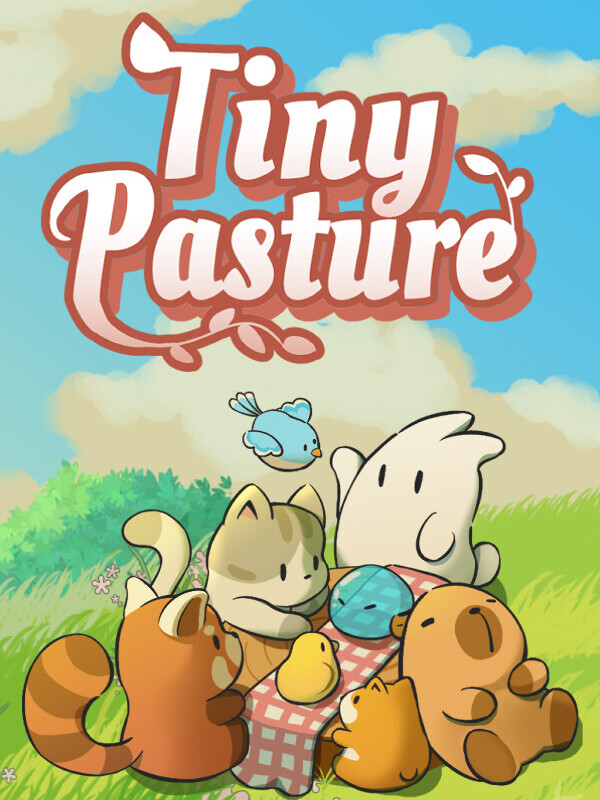

Tiny Pasture
Tiny Pasture
Details
|  | |
| Playtime | 1d 5h 8m 0s |
| Last Activity | 2025-05-20 16:55:33 |
| Added | 2025-05-21 13:08:30 |
| Modified | 2025-10-02 10:26:39 |
| Completion Status | Played |
| Library | Steam |
| Source | Steam |
| Platform | Macintosh PC (Windows) |
| Release Date | 2025-02-17 |
| Community Score | |
| Critic Score | |
| User Score | |
| Genre | Indie Simulator |
| Developer | |
| Publisher | |
| Feature | Single Player |
| Links | Steam Official Website YouTube Discord Bluesky |
| Tag | 2D Agriculture Atmospheric Building Capitalism Card Game Casual Clicker Crafting Creature Collector Cute Farming Sim Idler Management Nature Pixel Graphics Relaxing Sandbox Simulation Singleplayer |
Description
Tiny Pasture is your charming little farm simulator that cozies up at the bottom of your screen, keeping you company while you work or study. In this game, you can buy adorable baby animals, grow them, and collect coins dropped from them once they’re all grown up to rake in some sweet profits and expand your pasture. When you improve yourself and have fun, your little critters will grow with you.
Unlock New Species
Rabbits, foxes, alpacas, birds... and even slimes and zombies? Before long, you'll have an entire animal army!

Get Interactive with Your Animals
Feed them, click on them, and watch them grow happily! You can also click on them with the middle mouse button to make them follow your cursor around!

Raise a New Life
Place the Mystery Curtain in the Pasture and choose two adult animals of the same species. After a while, they'll breed and bring forth newborn animals!

Magic Pasture
Purchase and deploy magical facilities to help you keep your animals clean and healthy!

Other features
Freely drag and adjust the length of the pasture. Place it anywhere on your screen!

🖊️Game FAQ
Q: I usually hide my taskbar, but after running the game, it's gone!
A: Just press the Win key on your keyboard after running the game, and the taskbar will reappear.
Q: Why is the background behind my animals black when I open the game?
A: Please click on "View Discussions" on the store page; we've pinned a solution for the black screen issue there!
Q: Whenever Steam pops up a notification, the Pasture screen tears!
A: You can go to your library, right-click on our game, go to properties, general, and turn off "Enable Steam Overlay while in-game". This option will only affect our game and won't impact other games!